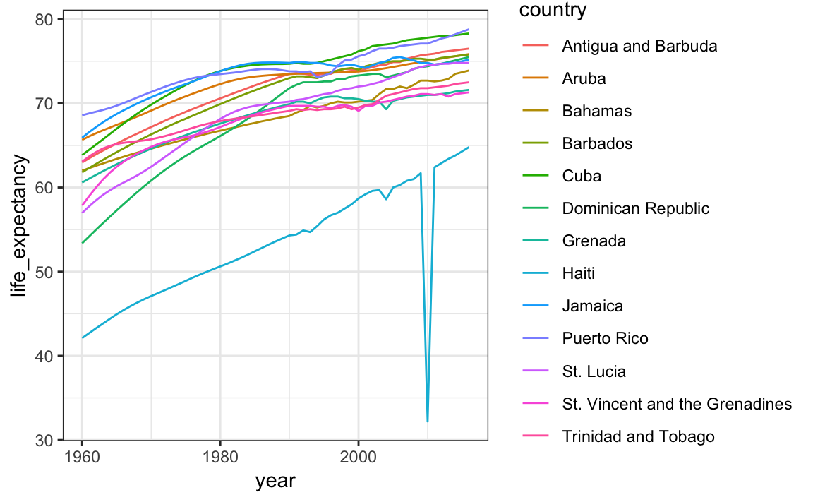

Chapter 40 String Processing
library(tidyverse)
library(rvest)One of the most common data wrangling challenges involves converting or extracting numeric data, contained in character strings, into the numeric representations required to make plots, summarize or fit models in R. Also common is processing unorganized text into meaningful variable names or categorical variables.
In the Web Scraping Section, we encountered an example related to creating the murders dataset we explored in the R chapter. After successfully extracting the raw data from a webpage into a table:
url <- paste0("https://en.wikipedia.org/w/index.php?title=",
"Gun_violence_in_the_United_States_by_state&direction=prev&oldid=810166167")
murders_raw <- read_html(url) %>%
html_nodes("table") %>%
html_table() %>%
.[[2]] %>%
setNames(c("state", "population", "total", "murder_rate"))
head(murders_raw)
#> state population total murder_rate
#> 1 Alabama 4,853,875 348 7.2
#> 2 Alaska 737,709 59 8.0
#> 3 Arizona 6,817,565 309 4.5
#> 4 Arkansas 2,977,853 181 6.1
#> 5 California 38,993,940 1,861 4.8
#> 6 Colorado 5,448,819 176 3.2We realized that two of the columns that we expected to contain numbers actually contained characters:
class(murders_raw$population)
#> [1] "character"
class(murders_raw$total)
#> [1] "character"This is a very common occurrence when web scraping since webpages and other formal documents use commas in numbers to improve readability; for example 4,853,875 is easier to read than 4853875. Because this is such a common task, there is already a function, parse_number that readily does the conversion. However, many of the string processing challenges a data scientist faces are unique and often unexpected. It is therefore quite ambitious to write a comprehensive section on this topic. Here we use case studies that help us demonstrate how string processing is a powerful tool necessary for many data wrangling challenges. Specifically, we show the original raw data used to create the data frames we have studied in this book and describe the string processing that was needed.
By going over these cases studies, we will cover some of the most common tasks in string processing including:
- removing unwanted characters from text
- extracting numeric values from text
- finding and replacing characters
- extracting specific parts of strings
- converting free form text to more uniform formats
- splitting strings into multiple values
40.1 Defining strings: single and double quotes and how to escape
To define strings in R, we can use either double quotes:
s <- "Hello!"or single quotes:
s <- 'Hello!'Make sure you choose the correct single quote since using the back quote will give you an error:
s <- `Hello`Now, what happens if our string includes double quotes? For example, if we want to write 10 inches like this 10"? You can’t use:
s <- "10""because this is just the string 10 followed by a double quote. If you type this into R, you get an error because you have an unclosed double quote. To avoid this, we can use the single quotes:
s <- '10"'In R, the function cat lets us see what the string actually looks like:
cat(s)
#> 10"Now, what if we want our string to be 5 feet written like this 5'? In this case, we can use the double quotes:
s <- "5'"
cat(s)
#> 5'So we’ve learned how to write 5 feet and 10 inches separately, but what if we want to write them together to represent 5 feet and 10 inches like this 5'10"? In this case, neither the single nor double quotes will work. This:
s <- '5'10"'closes the string after 5 and this:
s <- "5'10""closes the string after 10. Keep in mind that if we type one of the above code snippets into R, it will get stuck waiting for you to close the open quote and you will have to escape with the esc button.
In this situation, we need to escape the function of the quotes. This is done with the backslash \. You can escape either character like this:
s <- '5\'10"'
cat(s)
#> 5'10"or:
s <- "5'10\""
cat(s)
#> 5'10"Escaping character is something we often have to use when processing strings.
40.2 The stringr package
In general, string processing involves a string and a pattern. In R, we usually store strings in a character vector such as murders$population. Above, we scraped the web to obtain the murders_raw data. The first three strings in this vector defined by the population variable are:
murders_raw$population[1:3]
#> [1] "4,853,875" "737,709" "6,817,565"The usual coercion does not work here:
as.numeric(murders_raw$population[1:3])
#> Warning: NAs introduced by coercion
#> [1] NA NA NAThis is because of the commas ,. The string processing we want to do here is remove the pattern , from the strings in murders_raw$population and then coerce to numbers.
In general, string processing tasks can be divided into detecting, locating, extracting or replacing patterns in strings. In our example, we need to locate the , and replace them with the empty characters "".
Base R includes functions to perform all these tasks. However, they don’t follow a unifying convention which makes it a bit hard to memorize and use. The stringr package basically repackages this functionality, but uses a more consistent approach of naming functions and ordering their arguments. For example, in stringr, all the string processing functions start with str_. This means that if you type str_ and hit tab, R will auto-complete and show all the available functions. As a result, we don’t necessarily have to memorize all the function names. Another advantage is that the string is always the first argument, which means we can more easily use the pipe. We therefore will be focusing on the stringr package. However, because the R-base equivalents are so widely used, below we include a table describing the stringr functions and include R-base equivalent when available.
40.2.1 The str_ functions
library(stringr)The table below includes the functions available to you in the stringr package. We split them by task. We also include the R-base equivalent when available.
All these functions take a character vector as first argument. Also, for each function, operations are vectorized: the operation gets applied to each string in the vector.
Finally, note that in this table we mention groups. These will be explained later.
| Task | Description | stringr |
R-base |
|---|---|---|---|
| Detect | Is the pattern in the string? | str_detect |
grepl |
| Detect | Returns the index of entries that contain the pattern. | str_which |
grep |
| Detect | Returns the subset of strings that contain the pattern. | str_subset |
grep with value = TRUE |
| Locate | Returns positions of first occurrence of pattern in a string. | str_locate |
regexpr |
| Locate | Returns position of all occurrences of pattern in a string. | str_locate_all |
gregexpr |
| Locate | Show the first part of the string that matches pattern. | str_view |
|
| Locate | Show me all the parts of the string that match the pattern. | str_view_all |
|
| Extract | Extract the first part of the string that matches the pattern. | str_extract |
|
| Extract | Extract all parts of the string that match the pattern. | str_extract_all |
|
| Extract | Extract first part of the string that matches the groups and the patterns defined by the groups. | str_match |
|
| Extract | Extract all parts of the string that matches the groups and the patterns defined by the groups. | str_match_all |
|
| Extract | Extract a substring. | str_sub |
substring |
| Extract | Split a string into a list with parts separated by pattern. | str_split |
strsplit |
| Extract | Split a string into a matrix with parts separated by pattern. | str_split_fixed |
strsplit with fixed = TRUE |
| Describe | Count number of times a pattern appears in a string | str_count |
|
| Describe | Number of character in string. | str_length |
nchar |
| Replace | Replace first part of a string matching a pattern with another. | str_replace |
|
| Replace | Replace all parts of a string matching a pattern with another. | str_replace_all |
gsub |
| Replace | Change all characters to upper case. | str_to_upper |
toupper |
| Replace | Change all characters to lower case. | str_to_lower |
tolower |
| Replace | Change first character to upper and rest to lower. | str_to_title |
|
| Replace | Replace all NAs to a new value. |
str_replace_na |
|
| Replace | Remove white space from start and end of string. | str_trim |
|
| Manipulate | Join multiple strings. | str_c |
paste0 |
| Manipulate | Change the encoding of the string. | str_conv |
|
| Manipulate | Sort the vector in alphabetical order. | str_sort |
sort |
| Manipulate | Index needed to order the vector in alphabetical order. | str_order |
order |
| Manipulate | Truncate a string to a fixed size. | str_trunc |
|
| Manipulate | Add white space to string to make it a fixed size. | str_pad |
|
| Manipulate | Repeat a string. | str_dup |
rep then paste |
| Manipulate | Wrap things into formatted paragraphs. | str_wrap |
|
| Manipulate | String interpolation. | str_interp |
sprintf |
40.3 Case study 1: US murders data
Above we used used code to scrape the web and create the murders_raw table. We noted that three columns need to be parsed from characters into numbers, but that commas were making it hard. We can use the str_detect function to see that two of the three columns have commas in the entries:
commas <- function(x) any(str_detect(x, ","))
murders_raw %>% summarize_all(funs(commas))
#> state population total murder_rate
#> 1 FALSE TRUE TRUE FALSEWe can then use the str_replace_all function to remove them:
test_1 <- str_replace_all(murders_raw$population, ",", "")
test_1 <- as.numeric(test_1)We can then use mutate_all to apply this operation to each column, since it won’t affect the columns without commas.
It turns out that this operation is so common, that readr includes the function parse_number specifically meant to remove non-numeric characters before coercing:
test_2 <- parse_number(murders_raw$population)
identical(test_1, test_2)
#> [1] TRUESo we can obtain our desired table using:
murders_new <- murders_raw %>% mutate_at(2:3, parse_number)
murders_new %>% head
#> state population total murder_rate
#> 1 Alabama 4853875 348 7.2
#> 2 Alaska 737709 59 8.0
#> 3 Arizona 6817565 309 4.5
#> 4 Arkansas 2977853 181 6.1
#> 5 California 38993940 1861 4.8
#> 6 Colorado 5448819 176 3.2This case is relatively simple compared to the string processing challenges that we typically face in data science. The next example is a rather complex one.
40.4 Case study 2: Reported heights
The dslabs package includes the raw data from which the heights dataset was obtained. You can load it like this:
library(dslabs)
data(reported_heights)These heights were obtained using a web form in which students were asked to enter their heights. They could enter anything, but the instructions asked for height in inches, a number. We compiled 1014 submissions, but unfortunately the column vector with the reported heights had several non-numeric entries and as a result became a character vector:
class(reported_heights$height)
#> [1] "character"If we try to parse it into numbers, we get a warning:
x <- as.numeric(reported_heights$height)
#> Warning: NAs introduced by coercionAlthough most values appear to be height in inches as requested:
head(x)
#> [1] 75 70 68 74 61 65we do end up with many NAs:
sum(is.na(x))
#> [1] 81We can see some of the entries that are not successfully converted by filter to keep only the entries resulting in NAs:
reported_heights %>% mutate(new_height = as.numeric(height)) %>%
filter(is.na(new_height)) %>%
head(n=10)
#> time_stamp sex height new_height
#> 1 2014-09-02 15:16:28 Male 5' 4" NA
#> 2 2014-09-02 15:16:37 Female 165cm NA
#> 3 2014-09-02 15:16:52 Male 5'7 NA
#> 4 2014-09-02 15:16:56 Male >9000 NA
#> 5 2014-09-02 15:16:56 Male 5'7" NA
#> 6 2014-09-02 15:17:09 Female 5'3" NA
#> 7 2014-09-02 15:18:00 Male 5 feet and 8.11 inches NA
#> 8 2014-09-02 15:19:48 Male 5'11 NA
#> 9 2014-09-04 00:46:45 Male 5'9'' NA
#> 10 2014-09-04 10:29:44 Male 5'10'' NAWe immediately see what is happening. Some of the students did not report their heights in inches as requested. We could discard these data and continue. However, many of the entries follow patterns that, in principle, we can easily convert to inches. For example, in the output above, we see various cases that use the format x'y'' with x and y representing feet and inches respectively. Each one of these cases can be read and converted to inches by a human, for example 5'4'' is 5*12 + 4 = 64. So we could fix all the problematic entries by hand. However, humans are prone to making mistakes. Also, because we plan on continuing to collect data, it will be convenient to write code that automatically does this.
A first step in this type of task is to survey the problematic entries and try to define specific patterns followed by a large groups of entries. The larger these groups, the more entries we can fix with a single programmatic approach. We want to find patterns that can be accurately described with a rule, such as “a digit, followed by a feet symbol followed by one or two digits followed by an inches symbol”.
To look for such patterns, it helps to remove the entries that are consistent with being in inches and to view only the problematic entries. We thus write a function to automatically do this. We keep entries that either result in NAs when applying as.numeric or are outside a range of plausible heights. We permit a range that covers about 99.9999% of the adult population. We also use suppressWarnings to avoid the warning message we know as.numeric will gives us.
not_inches <- function(x, smallest = 50, tallest = 84){
inches <- suppressWarnings(as.numeric(x))
ind <- is.na(inches) | inches < smallest | inches > tallest
ind
}We apply this function and find that there are:
problems <- reported_heights %>%
filter(not_inches(height)) %>%
.$height
length(problems)
#> [1] 292problematic entries!
We can now view all the cases by simply printing them. We don’t do that here because there are 297, but after surveying them carefully, we see that three patterns can be used to define three large groups within these exceptions.
A pattern of the form
x'yorx' y''orx'y\"withxandyrepresenting feet and inches respectively. Here are ten examples:#> 5' 4" 5'7 5'7" 5'3" 5'11 5'9'' 5'10'' 5' 10 5'5" 5'2"A pattern of the form
x.yorx,ywithxfeet andyinches. Here are ten examples:#> 5.3 5.5 6.5 5.8 5.6 5,3 5.9 6,8 5.5 6.2Entries that were reported in centimeters rather than inches. Here are ten examples:
#> 150 175 177 178 163 175 178 165 165 180
Once we see these large groups following specific patterns, we can develop a plan of attack. Remember that there is rarely just one way to perform these tasks. Here we pick one that helps us teach several useful techniques. But surely there is a more efficient way of performing the task.
Plan of attack: we will convert entries fitting the first two patterns into a standardized one. We will then leverage the standardization to extract the feet and inches and convert to inches. We will then define a procedure for identifying entries that are in centimeters and convert them to inches. After applying these steps, we will then check again to see what entries were not fixed and see if we can tweak our approach to be more comprehensive.
At the end, we hope to have a script that makes web-based data collection methods robust to the most common user mistakes.
To achieve our goal, we will use a technique that enables us to accurately detect patterns and extract the parts we want: regular expressions (regex).
40.5 Regular expressions
library(stringr)A regular expression (regex) is way to describe specific patterns of characters of text. They can be used to determine if a given string matches the pattern. A set of rules has been defined to do this efficiently and precisely and here we show some examples. We can learn more about these rules by reading a detailed tutorial such as this one or this one. This cheat sheet is also very useful.
The patterns supplied to the stringr functions can be a regex rather than a standard string. We will learn how this works through a series of examples.
40.5.1 A string
Technically any string is is a regex, perhaps the simplest example is a single character. So the comma , used here:
pattern <- ","
str_detect(murders_raw$total, pattern)
#> [1] FALSE FALSE FALSE FALSE TRUE FALSE FALSE FALSE FALSE TRUE FALSE
#> [12] FALSE FALSE FALSE FALSE FALSE FALSE FALSE FALSE FALSE FALSE FALSE
#> [23] FALSE FALSE FALSE FALSE FALSE FALSE FALSE FALSE FALSE FALSE FALSE
#> [34] FALSE FALSE FALSE FALSE FALSE FALSE FALSE FALSE FALSE FALSE TRUE
#> [45] FALSE FALSE FALSE FALSE FALSE FALSE FALSEis a simple example of searching with regex.
Above, we noted that an entry included a cm. This is also a simple example of a regex. We can show all the entries that used cm like this:
str_subset(reported_heights$height, "cm")
#> [1] "165cm" "170 cm"40.5.2 Special characters
Now let’s consider a slightly more complicated example. Which of the following strings:
yes <- c("180 cm", "70 inches")
no <- c("180", "70''")
s <- c(yes, no)contain the pattern cm or inches? We could call str_detect twice:
str_detect(s, "cm") | str_detect(s, "inches")
#> [1] TRUE TRUE FALSE FALSEHowever, we don’t need to do this. The main feature that distinguishes the regex language from plain strings is that we can use special characters. These are characters with a meaning. We start by introducing | which means or. So if want to know if either cm or inches appears in the strings, we can use the regex cm|inches:
str_detect(s, "cm|inches")
#> [1] TRUE TRUE FALSE FALSEand obtain the correct answer.
Another special character that will be useful for identifying feet and inches values is \d which means any digit: 0, 1, 2, 3, 4, 5, 6, 7, 8, 9. The backlash is used to distinguish it from the character d. In R, we have to escape the backslash \ so we actually have to use \\d to represent digits. Here is an example:
yes <- c("5", "6", "5'10", "5 feet", "4'11")
no <- c("", ".", "Five", "six")
s <- c(yes, no)
pattern <- "\\d"
str_detect(s, pattern)
#> [1] TRUE TRUE TRUE TRUE TRUE FALSE FALSE FALSE FALSEWe take this opportunity to introduce the str_view function, which is helpful for troubleshooting as it shows us the first match for each string:
str_view(s, pattern)and str_view_all shows us all the matches, so 3'2 has two matches and 5'10 has three.
str_view_all(s, pattern)There are many other special characters. We will learn some others below, but you can see most or all of them in the cheat sheet mentioned earlier.
40.5.3 Testing
Throughout this section you will see that we create strings to test our regex. To do this, we define patterns that we know should match and also patterns that we know should not. We will call them yes and no respectively. This permits us to check for the two types of errors: failing to match and incorrectly matching.
40.5.4 Character classes
Character classes are used to define a series of characters that can be matched. We define character classes with square brackets []. So, for example, if we want the pattern to match only if we have a 5 or a 6, we use the regex [56]:
str_view(s, "[56]")Suppose we want to match values between 4 and 7. A common way to define character classes is with ranges. So, for example, [0-9] is equivalent to \\d. The pattern we want is [4-7].
yes <- as.character(4:7)
no <- as.character(1:3)
s <- c(yes, no)
str_detect(s, "[4-7]")
#> [1] TRUE TRUE TRUE TRUE FALSE FALSE FALSEHowever, it is important to know that in regex everything is a character; there are no numbers. So 4 is the character 4 not the number four. Notice, for example, that [1-20] does not mean 1 through 20, it means the characters 1 through 2 and the character 0. So [1-20] simply means the character class composed of 0, 1 and 2.
Keep in mind that characters do have an order and the digits do follow the numeric order. So 0 comes before 1 which comes before 2 and so on. For the same reason, we can define lowercase letters as [a-z], uppercase letters as [A-Z], and [a-zA-z] as both.
40.5.5 Anchors
What if we want a match when we have exactly 1 digit? This will be useful in our case study since feet are never more than 1 digit so a restriction will help us. One way to do this with regex is by using anchors, which let us define patterns that must start or end at a specific place. The two most common anchors are ^ and $ which represent the beginning and end of a string respectively. So the pattern ^\\d$ is read as:
start of the string followed by one digit followed by end of string.
This pattern now only detects the strings with exactly one digit:
pattern <- "^\\d$"
yes <- c("1", "5", "9")
no <- c("12", "123", " 1", "a4", "b")
s <- c(yes, no)
str_view(s, pattern)The 1 does not match because it does not start with the digit but rather with a space.
40.5.6 Quantifiers
For the inches part, we can have one or two digits. This can be specified in regex with quantifiers. This is done by following the pattern with curly brackets containing the number of times the previous entry can be repeated. We use an example to illustrate: the pattern for one or two digits is:
pattern <- "^\\d{1,2}$"
yes <- c("1", "5", "9", "12")
no <- c("123", "a4", "b")
str_view(c(yes, no), pattern)In this case, 123 does not match, but 12 does. So to look for our feet and inches pattern, we can add the symbols for feet ' and inches " after the digits.
With what we have learned, we can now construct an example for the pattern x'y\" with x feet and y inches.
pattern <- "^[4-7]'\\d{1,2}\"$"The pattern is now getting complex, but you can look at it carefully and break it down:
^= start of the string[4-7]= one digit, either 4,5,6 or 7'= feet symbol\\d{1,2}= one or two digits\"= inches symbol$= end of the string
Let’s test it out:
yes <- c("5'7\"", "6'2\"", "5'12\"")
no <- c("6,2\"", "6.2\"","I am 5'11\"", "3'2\"", "64")
str_detect(yes, pattern)
#> [1] TRUE TRUE TRUE
str_detect(no, pattern)
#> [1] FALSE FALSE FALSE FALSE FALSEFor now, we are permitting the inches to be 12 or larger. We will add a restriction later as the regex for this is a bit more complex than we are ready to show.
40.5.7 Not
To specify patterns that we do not want to detect, we can use the ^ symbol but only inside square brackets. For example, if we want to detect digits that are preceeded by anything except a letter we can do the following:
pattern <- "[^a-zA-Z]\\d"
yes <- c(".3", "+2", "-0","*4")
no <- c("A3", "B2", "C0", "E4")
str_detect(yes, pattern)
#> [1] TRUE TRUE TRUE TRUE
str_detect(no, pattern)
#> [1] FALSE FALSE FALSE FALSEAnother way to generate a pattern that searches for everything except is to use the upper case of the special character. For example \\D means anything other than a digit, \\S means anything except a space, and so on.
40.5.8 Search and replace with regex
Earlier we defined the object problems containing the strings that do not appear to be in inches. We can see that only:
pattern <- "^[4-7]'\\d{1,2}\"$"
sum(str_detect(problems, pattern))
#> [1] 14match the pattern we defined. To see why this is, we show some examples that expose why we don’t have more matches:
problems[c(2, 10, 11, 12, 15)] %>% str_view(pattern)An initial problem we see immediately is that some students wrote out the words “feet” and “inches”. We can see the entries that did this with the str_subset function:
str_subset(problems, "inches")
#> [1] "5 feet and 8.11 inches" "Five foot eight inches"
#> [3] "5 feet 7inches" "5ft 9 inches"
#> [5] "5 ft 9 inches" "5 feet 6 inches"We also see that some entries used two single quotes '' instead of a double quote "".
str_subset(problems, "''")
#> [1] "5'9''" "5'10''" "5'10''" "5'3''" "5'7''" "5'6''" "5'7.5''"
#> [8] "5'7.5''" "5'10''" "5'11''" "5'10''" "5'5''"To correct this, we can replace the different ways of representing inches and feet with a uniform symbol. We will use ' for feet, whereas for inches we will simply not use a symbol since some entries were of the form x'y. Now, if we no longer use the inches symbol, we have to change our pattern accordingly:
pattern <- "^[4-7]'\\d{1,2}$"If we do this replacement before the matching, we get many more matches:
problems %>%
str_replace("feet|ft|foot", "'") %>% # replace feet, ft, foot with '
str_replace("inches|in|''|\"", "") %>% # remove all inches symbols
str_detect(pattern) %>%
sum
#> [1] 48However, we still have many cases to go. Note that in the code above, we leveraged the stringr consistency and used the pipe.
40.5.9 White space \s
Another problem we have are spaces. For example, our pattern does not match 5' 4" because there is a space between ' and 4 which our pattern does not permit. Spaces are characters and R does not ignore them:
identical("Hi", "Hi ")
#> [1] FALSEIn regex, \s represents white space. To find patterns like 5' 4, we can change our pattern to:
pattern_2 <- "^[4-7]'\\s\\d{1,2}\"$"
str_subset(problems, pattern_2)
#> [1] "5' 4\"" "5' 11\"" "5' 7\""So do we need more than one regex pattern? It turns out we can use a quantifier for this as well.
40.5.10 Quantifiers: *, ?, +
We want the pattern to permit spaces but not require them. Even if there are several spaces, like this 5' 4, we still want it to match. There is a quantifier for exactly this purpose. In regex, the character * means zero or more instances of the previous character. Here is an example:
yes <- c("AB", "A1B", "A11B", "A111B", "A1111B")
no <- c("A2B", "A21B")
str_detect(yes, "A1*B")
#> [1] TRUE TRUE TRUE TRUE TRUE
str_detect(no, "A1*B")
#> [1] FALSE FALSEThe above matches the first string which has zero 1s and all the strings with one or more 1. We can then improve our pattern by adding the * after the space character \s.
There are two other similar quantifiers. For none or once, we can use ? and, for one or more, we can use +. You can see how they differ:
data.frame(string = c("AB", "A1B", "A11B", "A111B", "A1111B"),
none_or_more = str_detect(yes, "A1*B"),
nore_or_once = str_detect(yes, "A1?B"),
once_or_more = str_detect(yes, "A1+B"))
#> string none_or_more nore_or_once once_or_more
#> 1 AB TRUE TRUE FALSE
#> 2 A1B TRUE TRUE TRUE
#> 3 A11B TRUE FALSE TRUE
#> 4 A111B TRUE FALSE TRUE
#> 5 A1111B TRUE FALSE TRUEWe will actually use all three in our reported heights example, and we will see these in a later section.
To improve our pattern, we can add \\s* in front of and after the feet symbol ' to permit space between the feet symbol and the numbers. Now we match a few more entries:
pattern <- "^[4-7]\\s*'\\s*\\d{1,2}$"
problems %>%
str_replace("feet|ft|foot", "'") %>% # replace feet, ft, foot with '
str_replace("inches|in|''|\"", "") %>% # remove all inches symbols
str_detect(pattern) %>%
sum
#> [1] 53We might be tempted to avoid doing this by removing all the spaces with str_replace_all. However, when doing such an operation we need to make sure that it does not have unintended effects. In our reported heights examples, this will be a problem because some entries are of the form x y with space separating the feet from the inches. If we remove all spaces, we will incorrectly turn x y into xy which implies that a 6 1 would become 61 instead of 73.
40.5.11 Groups
The second large group of problematic entries were of the form x.y, x,y and x y. We want to change all these to our common format x'y. But we can’t just do a search and replace because we would change values such as 70.5 into 70'5. Our strategy will therefore be to search for a very specific pattern that assures us feet and inches are being provided and then, for those that match, replace appropriately.
Groups are a powerful aspect of regex that permits the extraction values. Groups are defined using parentheses. They don’t affect the pattern matching per-se. Instead, it permits tools to identify specific parts of the pattern so we can extract them.
We want to change heights written like 5.6 to 5'6.
To avoid changing patterns such as 70.2, we will require that the first digit be between 4 and 7 [4-7] and that the second be none or more digits \\d*. Let’s start by defining a simple pattern that matches this:
pattern_without_groups <- "^[4-7],\\d*$"We want to extract the digits so we can then form the new version using a period. These are our two groups, so we encapsulate them with parentheses:
pattern_with_groups <- "^([4-7]),(\\d*)$"We encapsulate the part of the pattern that matches the parts we want. Adding groups does not affect the detection, since it only signals that we want to save what is captured by the groups:
yes <- c("5,9", "5,11", "6,", "6,1")
no <- c("5'9", ",", "2,8", "6.1.1")
s <- c(yes, no)
str_detect(s, pattern_without_groups)
#> [1] TRUE TRUE TRUE TRUE FALSE FALSE FALSE FALSE
str_detect(s, pattern_with_groups)
#> [1] TRUE TRUE TRUE TRUE FALSE FALSE FALSE FALSEOnce we define groups, we can use the function str_match to extract the values these groups define:
str_match(s, pattern_with_groups)
#> [,1] [,2] [,3]
#> [1,] "5,9" "5" "9"
#> [2,] "5,11" "5" "11"
#> [3,] "6," "6" ""
#> [4,] "6,1" "6" "1"
#> [5,] NA NA NA
#> [6,] NA NA NA
#> [7,] NA NA NA
#> [8,] NA NA NANotice that the second and third columns contains feet and inches respectively. The first column is the part of the string matching the pattern. If no match occurred, we see an NA.
Now we can understand the difference between the functions str_extract and str_match: str_extract extracts only strings that match a pattern, not the values defined by groups:
str_extract(s, pattern_with_groups)
#> [1] "5,9" "5,11" "6," "6,1" NA NA NA NA40.5.12 Search and replace using groups
Another powerful aspect of groups is that you can refer to the extracted values in a regex when searching and replacing.
The regex special character for the i-th groups is \\i. So \\1 is the value extracted from the first group, \\2 the value from the second and so on. As a simple example, note that the following code will replace a comma with period, but only if it is between two digits:
pattern_with_groups <- "^([4-7]),(\\d*)$"
yes <- c("5,9", "5,11", "6,", "6,1")
no <- c("5'9", ",", "2,8", "6.1.1")
s <- c(yes, no)
str_replace(s, pattern_with_groups, "\\1'\\2")
#> [1] "5'9" "5'11" "6'" "6'1" "5'9" "," "2,8" "6.1.1"We can use this to convert cases in our reported heights.
We are now ready to define a pattern that helps us convert all the x.y, x,y and x y to our preferred format. We need to adapt pattern_with_groups to be bit more flexible and capture all the cases.
pattern_with_groups <-"^([4-7])\\s*[,\\.\\s+]\\s*(\\d*)$"Let’s break this one down: - ^ = start of the string - [4-7] = one digit, either 4,5,6 or 7 - \\s* = none or more white space - [,\\.\\s+] = feet symbol is either ,, . or at least one space. - \\s* = none or more white space - \\d* = none or more digits - $ = end of the string
We can see that it appears to be working:
str_subset(problems, pattern_with_groups) %>% head
#> [1] "5.3" "5.25" "5.5" "6.5" "5.8" "5.6"and will be able to perform the search and replace:
str_subset(problems, pattern_with_groups) %>%
str_replace(pattern_with_groups, "\\1'\\2") %>% head
#> [1] "5'3" "5'25" "5'5" "6'5" "5'8" "5'6"Again, we will deal with inches larger than twelve later.
40.5.13 Testing and improving
We have developed a powerful string processing technique that can help us catch many of the problematic entries. Now it’s time to test our approach, search for further problems, and tweak our approach for possible improvements. Let’s write a function that captures all the entries that can’t be converted into numbers remembering that some are in centimeters (we will deal with those later):
not_inches_or_cm <- function(x, smallest = 50, tallest = 84){
inches <- suppressWarnings(as.numeric(x))
ind <- !is.na(inches) &
((inches >= smallest & inches <= tallest) |
(inches/2.54 >= smallest & inches/2.54 <= tallest))
!ind
}
problems <- reported_heights %>%
filter(not_inches_or_cm(height)) %>%
.$height
length(problems)
#> [1] 200Let’s see how many of these fit our pattern after the processing steps we developed above:
converted <- problems %>%
str_replace("feet|foot|ft", "'") %>% #convert feet symbols to '
str_replace("inches|in|''|\"", "") %>% #remove inches symbols
str_replace("^([4-7])\\s*[,\\.\\s+]\\s*(\\d*)$", "\\1'\\2") ##change format
pattern <- "^[4-7]\\s*'\\s*\\d{1,2}$"
index <- str_detect(converted, pattern)
mean(index)
#> [1] 0.615Note how we leveraged the pipe, one of the advantages of using stringr. This last piece of code shows that we have matched well over half of the strings. Let’s examine the remaining cases:
converted[!index]
#> [1] "6" "165cm" "511" "6"
#> [5] "2" ">9000" "5 ' and 8.11 " "11111"
#> [9] "6" "103.2" "19" "5"
#> [13] "300" "6'" "6" "Five ' eight "
#> [17] "7" "214" "6" "0.7"
#> [21] "6" "2'33" "612" "1,70"
#> [25] "87" "5'7.5" "5'7.5" "111"
#> [29] "5' 7.78" "12" "6" "yyy"
#> [33] "89" "34" "25" "6"
#> [37] "6" "22" "684" "6"
#> [41] "1" "1" "6*12" "87"
#> [45] "6" "1.6" "120" "120"
#> [49] "23" "1.7" "6" "5"
#> [53] "69" "5' 9 " "5 ' 9 " "6"
#> [57] "6" "86" "708,661" "5 ' 6 "
#> [61] "6" "649,606" "10000" "1"
#> [65] "728,346" "0" "6" "6"
#> [69] "6" "100" "88" "6"
#> [73] "170 cm" "7,283,465" "5" "5"
#> [77] "34"Four clear patterns arise and some other minor problems:
- Many students measuring exactly 5 or 6 feet did not enter any inches, for example
6', and our pattern requires that inches be included. - Some students measuring exactly 5 or 6 feet entered just that number.
- Some of the inches were entered with decimal points. For example
5'7.5''. Our pattern only looks for two digits. - Some entries have spaces at the end, for example
5 ' 9. - Some entries are in meters and some of these use European decimals:
1.6,1,7. - Two students added
cm. - A student spelled out the numbers:
Five foot eight inches.
It is not necessarily clear that it is worth writing code to handle all these cases since they might be rare enough. However, some of them provide us with an opportunity to learn a few more regex techniques, so we will build a fix.
40.5.14 Using groups and quantifiers
For case 1, if we add a '0 to first zero, for example, convert all 6 to 6'0, then our pattern will match. This can be done using groups:
yes <- c("5", "6", "5")
no <- c("5'", "5''", "5'4")
s <- c(yes, no)
str_replace(s, "^([4-7])$", "\\1'0")
#> [1] "5'0" "6'0" "5'0" "5'" "5''" "5'4"The pattern says it has to start (^) followed by a digit between 4 and 7 and end there ($). The parenthesis defines the group that we pass as \\1 to generate the replacement regex string.
We can adapt this code slightly to handle the case 2 as well, which covers the entry 5'. Note 5' is left untouched. This is because the extra ' makes the pattern not match since we have to end with a 5 or 6. We want to permit the 5 or 6 to be followed by 0 or 1 feet sign. So we can simply add '{0,1} after the ' to do this. However, we can use the none or once special character ?. As we saw above, this is different from * which is none or more. We now see that the fourth case is also converted:
str_replace(s, "^([56])'?$", "\\1'0")
#> [1] "5'0" "6'0" "5'0" "5'0" "5''" "5'4"Here we only permit 5 and 6, but not 4 and 7. This is because 5 and 6 feet tall is quite common, so we assume those that typed 5 or 6 really meant 60 or 72 inches. However, 4 and 7 feet tall are so rare that, although we accept 84 as a valid entry, we assume 7 was entered in error.
We can use quantifiers to deal with case 3. These entries are not matched because the inches include decimals and our pattern does not permit this. We need to allow the second group to include decimals not just digits. This means we must permit zero or one period . then zero or more digits. So we will be using both ? and *. Also remember that, for this particular case, the period needs to be escaped since it is a special character (it means any character except line break). Here is a simple example of how we can use *.
So we can adapt our pattern, currently ^[4-7]\\s*'\\s*\\d{1,2}$ to permit a decimal at the end:
pattern <- "^[4-7]\\s*'\\s*(\\d+\\.?\\d*)$"Case 4, meters using commas, we can approach similarly to how we converted the x.y to x'y. A difference is that we require that the first digit be 1 or 2:
yes <- c("1,7", "1, 8", "2, " )
no <- c("5,8", "5,3,2", "1.7")
s <- c(yes, no)
str_replace(s, "^([12])\\s*,\\s*(\\d*)$", "\\1\\.\\2")
#> [1] "1.7" "1.8" "2." "5,8" "5,3,2" "1.7"We will later check if the entries are meters using their numeric values.
40.6 Stringr package (continued)
40.6.1 Trimming
In general, spaces at the start or end of the string are uninformative. These can be particularly deceptive because sometimes they can be hard to see:
s <- "Hi "
cat(s)
#> Hi
identical(s, "Hi")
#> [1] FALSEThis is a general enough problem that there is a function dedicated to removing them: str_trim.
str_trim("5 ' 9 ")
#> [1] "5 ' 9"40.6.2 To uppercase and to lowercase
One of the entries writes out numbers as words Five foot eight inches. Although not efficient, we could add 13 extra str_replace calls to convert zero to 0, one to 1, and so on. To avoid having to write two separate operations for Zero and zero, One and one, etc., we can use the str_to_lower function to make all works lowercase first:
s <- c("Five feet eight inches")
str_to_lower(s)
#> [1] "five feet eight inches"We are now be ready to define a procedure that converts all the problematic cases to inches.
40.7 Case study 2: Reported heights (continued)
We now put all this together into a function that takes a string vector and tries to convert as many strings as possible to one format. We write a function that puts together what we have done above.
convert_format <- function(s){
s %>%
str_replace("feet|foot|ft", "'") %>% #convert feet symbols to '
str_replace_all("inches|in|''|\"|cm|and", "") %>% #remove inches and other symbols
str_replace("^([4-7])\\s*[,\\.\\s+]\\s*(\\d*)$", "\\1'\\2") %>% #change x.y, x,y x y
str_replace("^([56])'?$", "\\1'0") %>% #add 0 when to 5 or 6
str_replace("^([12])\\s*,\\s*(\\d*)$", "\\1\\.\\2") %>% #change european decimal
str_trim() #remove extra space
}We can also write a function that converts words to numbers:
words_to_numbers <- function(s){
str_to_lower(s) %>%
str_replace_all("zero", "0") %>%
str_replace_all("one", "1") %>%
str_replace_all("two", "2") %>%
str_replace_all("three", "3") %>%
str_replace_all("four", "4") %>%
str_replace_all("five", "5") %>%
str_replace_all("six", "6") %>%
str_replace_all("seven", "7") %>%
str_replace_all("eight", "8") %>%
str_replace_all("nine", "9") %>%
str_replace_all("ten", "10") %>%
str_replace_all("eleven", "11")
}Now we can see which problematic entries remain:
converted <- problems %>% words_to_numbers %>% convert_format
remaining_problems <- converted[not_inches_or_cm(converted)]
pattern <- "^[4-7]\\s*'\\s*\\d+\\.?\\d*$"
index <- str_detect(remaining_problems, pattern)
remaining_problems[!index]
#> [1] "511" "2" ">9000" "11111" "103.2"
#> [6] "19" "300" "7" "214" "0.7"
#> [11] "2'33" "612" "1.70" "87" "111"
#> [16] "12" "yyy" "89" "34" "25"
#> [21] "22" "684" "1" "1" "6*12"
#> [26] "87" "1.6" "120" "120" "23"
#> [31] "1.7" "86" "708,661" "649,606" "10000"
#> [36] "1" "728,346" "0" "100" "88"
#> [41] "7,283,465" "34"they all seem to be cases that are impossible to fix.
40.8 separate
In a previous section, we constructed a regex that lets us identify which elements of a character vector match the feet and inches pattern. However, we want to do more. We want to extract and save the feet and number values so that we can convert them to inches when appropriate.
If we have a simpler case like this:
s <- c("5'10", "6'1")
tab <- data.frame(x = s)we have already learned to use the separate function:
tab %>% separate(x, c("feet", "inches"), sep = "'")
#> feet inches
#> 1 5 10
#> 2 6 1The extract function from the tidyr package lets us use regex groups to extract the desired values. Above we showed how to use separate to split the data as desired. Here is the equivalent code using extract:
tab %>% extract(x, c("feet", "inches"), regex = "(\\d)'(\\d{1,2})")
#> feet inches
#> 1 5 10
#> 2 6 1So why do we even need the new function extract? We have seen how small changes can throw off exact pattern matching. Groups in regex give us more flexibility. For example, if we define:
s <- c("5'10", "6'1\"","5'8inches")
tab <- data.frame(x = s)and we only want the numbers, separate fails:
tab %>% separate(x, c("feet","inches"), sep = "'", fill = "right")
#> feet inches
#> 1 5 10
#> 2 6 1"
#> 3 5 8inchesHowever, we can use extract. The regex here is a bit more complicated since we have to permit ' with spaces and feet. We also do not want the " included in the value, so we do not include that in the group:
tab %>% extract(x, c("feet", "inches"), regex = "(\\d)'(\\d{1,2})")
#> feet inches
#> 1 5 10
#> 2 6 1
#> 3 5 840.9 Case study 2: Reported heights (continued)
We are now ready to put it all together and wrangle our reported heights data to try to recover as many heights as possible. The code is complex, but we will break it down into parts.
We start by cleaning up the height column so that the heights are closer to a feet’inches format. We added an original heights column so we can compare before and after.
Now we are ready to wrangle our reported heights dataset:
pattern <- "^([4-7])\\s*'\\s*(\\d+\\.?\\d*)$"
smallest <- 50
tallest <- 84
new_heights <- reported_heights %>%
mutate(original = height,
height = words_to_numbers(height) %>% convert_format()) %>%
extract(height, c("feet", "inches"), regex = pattern, remove = FALSE) %>%
mutate_at(c("height", "feet", "inches"), as.numeric) %>%
mutate(guess = 12*feet + inches) %>%
mutate(height = case_when(
!is.na(height) & between(height, smallest, tallest) ~ height,#inches
!is.na(height) & between(height/2.54, smallest, tallest) ~ height/2.54,#centimeters
!is.na(height) & between(height*100/2.54, smallest, tallest) ~ height*100/2.54,#meters
!is.na(guess) & inches < 12 & between(guess, smallest, tallest) ~ guess,#feet'inches
TRUE ~ as.numeric(NA))) %>%
select(-guess)We can check all the entries we converted by typing:
new_heights %>%
filter(not_inches(original)) %>%
select(original, height) %>%
arrange(height) %>%
View()A final observation is that if we look at the shortest students in our course:
new_heights %>% arrange(height) %>% head(n=7)
#> time_stamp sex height feet inches original
#> 1 2017-07-04 01:30:25 Male 50.0 NA NA 50
#> 2 2017-09-07 10:40:35 Male 50.0 NA NA 50
#> 3 2014-09-02 15:18:30 Female 51.0 NA NA 51
#> 4 2016-06-05 14:07:20 Female 52.0 NA NA 52
#> 5 2016-06-05 14:07:38 Female 52.0 NA NA 52
#> 6 2014-09-23 03:39:56 Female 53.0 NA NA 53
#> 7 2015-01-07 08:57:29 Male 53.8 NA NA 53.77We see heights of 53, 54, and 55. In the originals, we also have 51 and 52. These short heights are rare and it is likely that the students actually meant 5'1, 5'2, 5'3, 5'4, and 5'5. Because we are not completely sure, we will leave them as reported.
40.10 String splitting
Another very common data wrangling operation is string splitting. To illustrate how this comes up, we start with an illustrative example. Suppose we did not have the function read_csv available to use. We instead have to read a csv file using the base R function readLines like this:
filename <- system.file("extdata/murders.csv", package = "dslabs")
lines <- readLines(filename)This function reads-in the data line-by-line to create a vector of strings. In this case, one string for each row in the spreadsheet. The first six lines are:
lines %>% head()
#> [1] "state,abb,region,population,total" "Alabama,AL,South,4779736,135"
#> [3] "Alaska,AK,West,710231,19" "Arizona,AZ,West,6392017,232"
#> [5] "Arkansas,AR,South,2915918,93" "California,CA,West,37253956,1257"We want to extract the values that are separated by comma for each string in the vector. The command str_split does exactly this:
x <- str_split(lines, ",")
x %>% head()
#> [[1]]
#> [1] "state" "abb" "region" "population" "total"
#>
#> [[2]]
#> [1] "Alabama" "AL" "South" "4779736" "135"
#>
#> [[3]]
#> [1] "Alaska" "AK" "West" "710231" "19"
#>
#> [[4]]
#> [1] "Arizona" "AZ" "West" "6392017" "232"
#>
#> [[5]]
#> [1] "Arkansas" "AR" "South" "2915918" "93"
#>
#> [[6]]
#> [1] "California" "CA" "West" "37253956" "1257"Note that the first entry has the column names so we can separate that out:
col_names <- x[[1]]
x <- x[-1]To convert our list into a data frame, we can use a shortcut provided by the map functions in the purrr package. The map function applies the same function to each element in a list. So if we want to extract the first entry of each element in x, we can write:
library(purrr)
map(x, function(y) y[1]) %>% head()
#> [[1]]
#> [1] "Alabama"
#>
#> [[2]]
#> [1] "Alaska"
#>
#> [[3]]
#> [1] "Arizona"
#>
#> [[4]]
#> [1] "Arkansas"
#>
#> [[5]]
#> [1] "California"
#>
#> [[6]]
#> [1] "Colorado"However, because this is such a common task, purrr provides a shortcut. If the second argument receives an integer instead of a function, it assumes we want that entry:
map(x, 1) %>% head()
#> [[1]]
#> [1] "Alabama"
#>
#> [[2]]
#> [1] "Alaska"
#>
#> [[3]]
#> [1] "Arizona"
#>
#> [[4]]
#> [1] "Arkansas"
#>
#> [[5]]
#> [1] "California"
#>
#> [[6]]
#> [1] "Colorado"To force map to return a character vector instead of a list, we can use map_chr. Similarly map_int returns integers. So to create our data frame, we can use:
dat <- data.frame(map_chr(x, 1),
map_chr(x, 2),
map_chr(x, 3),
map_chr(x, 4),
map_chr(x, 5)) %>%
mutate_all(parse_guess) %>%
setNames(col_names)
dat %>% head
#> state abb region population total
#> 1 Alabama AL South 4779736 135
#> 2 Alaska AK West 710231 19
#> 3 Arizona AZ West 6392017 232
#> 4 Arkansas AR South 2915918 93
#> 5 California CA West 37253956 1257
#> 6 Colorado CO West 5029196 65If you learn more about the purrr package, you will be able to write the code above more efficiently:
dat <- x %>%
transpose() %>%
map( ~ parse_guess(unlist(.))) %>%
setNames(col_names) %>%
as.data.frame() It turns out that we can avoid all the work shown above after the call to str_split. Specifically, if we know that the data we are extracting can be represented as a table, we can use the argument simplify=TRUE and str_split return a matrix instead of a list:
x <- str_split(lines, ",", simplify = TRUE)
col_names <- x[1,]
x <- x[-1,]
x %>% as_data_frame() %>%
setNames(col_names) %>%
mutate_all(parse_guess)
#> # A tibble: 51 x 5
#> state abb region population total
#> <chr> <chr> <chr> <int> <int>
#> 1 Alabama AL South 4779736 135
#> 2 Alaska AK West 710231 19
#> 3 Arizona AZ West 6392017 232
#> 4 Arkansas AR South 2915918 93
#> 5 California CA West 37253956 1257
#> 6 Colorado CO West 5029196 65
#> # ... with 45 more rows40.11 Case study 3: Extracting tables from a PDF
One of the datasets provided in dslabs shows scientific funding rates by gender in the Netherlands:
library(dslabs)
data("research_funding_rates")
research_funding_rates %>%
select("discipline", "success_rates_men", "success_rates_women")
#> discipline success_rates_men success_rates_women
#> 1 Chemical sciences 26.5 25.6
#> 2 Physical sciences 19.3 23.1
#> 3 Physics 26.9 22.2
#> 4 Humanities 14.3 19.3
#> 5 Technical sciences 15.9 21.0
#> 6 Interdisciplinary 11.4 21.8
#> 7 Earth/life sciences 24.4 14.3
#> 8 Social sciences 15.3 11.5
#> 9 Medical sciences 18.8 11.2The data comes from a paper published in the prestigious journal PNAS. However, the data is not provided in a spreadsheet, it is in a table in a PDF document:

(Source: Romy van der Lee and Naomi Ellemers, PNAS 2015 112 (40) 12349-12353)
We could extract the number by hand, but this could lead to human error. Instead, we can try to wrangle the data using R. We start by downloading the pdf document, then importing into R:
library("pdftools")
temp_file <- tempfile()
url <- paste0("http://www.pnas.org/content/suppl/2015/09/16/",
"1510159112.DCSupplemental/pnas.201510159SI.pdf")
download.file(url, temp_file)
txt <- pdf_text(temp_file)
file.remove(temp_file)If we examine the object text, we notice that it is a character vector with an entry for each page. So we keep the page we want:
raw_data_research_funding_rates <- txt[2]The steps above can actually be skipped because we include this raw data in the dslabs package as well:
data("raw_data_research_funding_rates")Examining the object raw_data_research_funding_rates we see that it is a long string and each line on the page, including the table rows, are separated by the symbol for newline: \n. We therefore can create a list with the lines of the text as elements as follows:
tab <- str_split(raw_data_research_funding_rates, "\n")Because we start off with just one element in the string, we end up with a list with just one entry.
tab <- tab[[1]]By examining tab we see that the information for the column names is the third and fourth entries:
the_names_1 <- tab[3]
the_names_2 <- tab[4]In this table, the column information is spread across two lines.
the_names_1 %>% str_trim() %>% cat()
#> Applications, n Awards, n Success rates, %We want to create one vector with one name for each column. Using some of the functions we have just learned, we do this. Let’s start with the first line shown above. We want to remove the leading space and anything following the comma. We use regex for the latter. Then we can obtain the elements by splitting strings separated by space. We want to split only when there are 2 or more spaces to avoid splitting success rate. So we use the regex \\s{2,}
the_names_1 <- the_names_1 %>%
str_trim() %>%
str_replace_all(",\\s.", "") %>%
str_split("\\s{2,}", simplify = TRUE)
the_names_1
#> [,1] [,2] [,3]
#> [1,] "Applications" "Awards" "Success rates"Now we will look at the second line:
the_names_2 %>% str_replace_all("\\s+"," ")
#> [1] " Discipline Total Men Women Total Men Women Total Men Women"Here we want to trim the leading space and then split by space as we did for the first line:
the_names_2 <- the_names_2 %>%
str_trim() %>%
str_split("\\s+", simplify = TRUE)
the_names_2
#> [,1] [,2] [,3] [,4] [,5] [,6] [,7] [,8]
#> [1,] "Discipline" "Total" "Men" "Women" "Total" "Men" "Women" "Total"
#> [,9] [,10]
#> [1,] "Men" "Women"We can then join these to generate one name for each column:
tmp_names <- str_c(rep(the_names_1, each = 3), the_names_2[-1], sep = "_")
the_names <- c(the_names_2[1], tmp_names) %>%
str_to_lower() %>%
str_replace_all("\\s", "_")
the_names
#> [1] "discipline" "applications_total" "applications_men"
#> [4] "applications_women" "awards_total" "awards_men"
#> [7] "awards_women" "success_rates_total" "success_rates_men"
#> [10] "success_rates_women"Now we are ready to get the actual data. By examining the tab object, we notice that the information is in lines 6 through 14. We can use str_split again to achieve our goal:
new_research_funding_rates <- tab[6:14] %>%
str_trim %>%
str_split("\\s{2,}", simplify = TRUE) %>%
data.frame(stringsAsFactors = FALSE) %>%
setNames(the_names) %>%
mutate_at(-1, parse_number)
new_research_funding_rates %>% head()
#> discipline applications_total applications_men
#> 1 Chemical sciences 122 83
#> 2 Physical sciences 174 135
#> 3 Physics 76 67
#> 4 Humanities 396 230
#> 5 Technical sciences 251 189
#> 6 Interdisciplinary 183 105
#> applications_women awards_total awards_men awards_women
#> 1 39 32 22 10
#> 2 39 35 26 9
#> 3 9 20 18 2
#> 4 166 65 33 32
#> 5 62 43 30 13
#> 6 78 29 12 17
#> success_rates_total success_rates_men success_rates_women
#> 1 26.2 26.5 25.6
#> 2 20.1 19.3 23.1
#> 3 26.3 26.9 22.2
#> 4 16.4 14.3 19.3
#> 5 17.1 15.9 21.0
#> 6 15.8 11.4 21.8We can see that the objects are identical:
identical(research_funding_rates, new_research_funding_rates)
#> [1] TRUE40.12 Re-coding
Another common operation involving strings is recoding the names of categorical variables. Let’s say you have really long names for your levels and you will be displaying them in plots, you might want to use shorter versions of these names. For example, in character vectors with country names, you might want to change “United States of America” to “USA” and “United Kingdom” to UK, and so on. We can do this with case_when although the tidyverse offers options that are specifically designed for this task: the recode function.
Here is an example that shows how to rename countries with long names:
library(dslabs)
data("gapminder")Suppose we want to show life expectancy time series by country for the Caribbean:
gapminder %>%
filter(region=="Caribbean") %>%
ggplot(aes(year, life_expectancy, color = country)) +
geom_line()
The plot is what we want, but much of the space is wasted to accommodate some of the long country names:
gapminder %>%
filter(region=="Caribbean") %>%
filter(str_length(country) >= 12) %>%
distinct(country)
#> country
#> 1 Antigua and Barbuda
#> 2 Dominican Republic
#> 3 St. Vincent and the Grenadines
#> 4 Trinidad and TobagoWe have four countries with names longer than 12 characters. These names appear once for each year in the Gapminder dataset. Once we pick nicknames, we need to change them all consistently. The recode function can be used to do this:
gapminder %>% filter(region=="Caribbean") %>%
mutate(country = recode(country,
`Antigua and Barbuda` = "Barbuda",
`Dominican Republic` = "DR",
`St. Vincent and the Grenadines` = "St. Vincent",
`Trinidad and Tobago` = "Trinidad")) %>%
ggplot(aes(year, life_expectancy, color = country)) +
geom_line()
There are other similar functions in other R packages, such as recode_factor and fct_recoder in the forcats package.
Exercises
Complete all lessons and exercises in the https://regexone.com/ online interactive tutorial.
In the
extdatadirectory of the dslabs package, you will find a PDF file containing daily mortality data for Puerto Rico from Jan 1, 2015 to May 31, 2018. You can find the file like this:fn <- system.file("extdata", "RD-Mortality-Report_2015-18-180531.pdf", package="dslabs")Find and open the file or open it directly from RStudio. On a Mac, you can type:
system2("open", args = fn)and on Windows, you can type:
system("cmd.exe", input = paste("start", fn))Which of the following best describes this file:
A. It is a table. Extracting the data will be easy.
B. It is a report written in prose. Extracting the data will be impossible.
C. It is a report combining graphs and tables. Extracting the data seems possible.
D. It shows graphs of the data. Extracting the data will be difficult.
We are going to create a tidy dataset with each row representing one observation. The variables in this dataset will be year, month, day and deaths. Start by installing and loading the pdftools package:
install.packages("pdftools") library(pdftools)Now read-in
fnusing thepdf_textfunction, store the results in an object calledtxt. Describe what you see intxt.A. A table with the mortality data.
B. A character string of length 12. Each entry represents the text in each page. The mortality data is in there somewhere.
C. A character string with one entry containing all the information in the PDF file.
D. An html document.
Extract the ninth page of the PDF file from the object
txt, then use thestr_splitfrom the stringr package so that you have each line in a different entry. Call this string vectors. Then look at the result and choose the one that best describes what you see.A. It is an empty string.
B. I can see the figure shown in page 1.
C. It is a tidy table.
D. I can see the table! But there is a bunch of other stuff we need to get rid of.
What kind of object is
sand how many entries does it have?We see that the output is a list with one component. Redefine
sto be the first entry of the list. What kind of object issand how many entries does it have?When inspecting the string we obtained above, we see a common problem: white space before and after the other characters. Trimming is a common first step in string processing. These extra spaces will eventually make splitting the strings hard so we start by removing them. We learned about the command
str_trimthat removes spaces at the start or end of the strings. Use this function to trims.We want to extract the numbers from the strings stored in
s. However, there a lot of non-numeric characters that will get in the way. We can remove these, but before doing this we want to preserve the string with the column header, which includes the month abbreviation. Use thestr_whichfunction to find the rows with a header. Save these results toheader_index. Hint: find the first string that matches the pattern2015using thestr_whichfunction.Now we are going to define two objects:
monthwill store the month andheaderwill store the column names. Identify which row contains the header of the table. Save the content of the row into an object calledheader, then usestr_splitto help define the two objects we need. Hints: the separator here is one or more spaces. Also, consider using thesimplifyargument.Notice that towards the end of the page you see a totals row followed by rows with other summary statistics. Create an object called
tail_indexwith the index of the totals entry.Because our PDF page includes graphs with numbers, some of our rows have just one number (from the y-axis of the plot). Use the
str_countfunction to create an objectnwith the number of numbers in each each row. Hint: you can write a regex for number like this\\d+.We are now ready to remove entries from rows that we know we don’t need. The entry
header_indexand everything before it should be removed. Entries for whichnis 1 should also be removed, and the entrytail_indexand everything that comes after it should be removed as well.Now we are ready to remove all the non-numeric entries. Do this using regex and the
str_remove_allfunction. Hint: in regex, using the^inside the[]means not, like the!means not in!=. To define the regex pattern to catch all non-numbers, you can type[^\\d]. But remember you also want to keep spaces.To convert the strings into a table, use the
str_split_fixedfunction. Convertsinto a data matrix with just the day and death count data. Hints: note that the separator is one or more spaces. Make the argumentna value that limits the number of columns to the values in the 4 columns and the last column captures all the extra stuff. Then keep only the first four columns.Now you are almost ready to finish. Add column names to the matrix, including one called
day. Also, add a column with the month. Call the resulting objectdat. Finally, make sure the day is an integer not a character. Hint: use only the first five columns.Now finish it up by tidying
tabwith the gather function.Make a plot of deaths versus day with color to denote year. Exclude 2018 since we have no data.
Now that we have wrangled this data step-by-step, put it all together in one R chunk, using the pipe as much as possible. Hint: first define the indexes, then write one line of code that does all the string processing.
Advanced: let’s return to the MLB Payroll example from the web scraping section. Use what you have learned in the web scraping and string processing chapters to extract the payroll for the New York Yankees, Boston Red Sox, and Oakland A’s and plot them as a function of time.